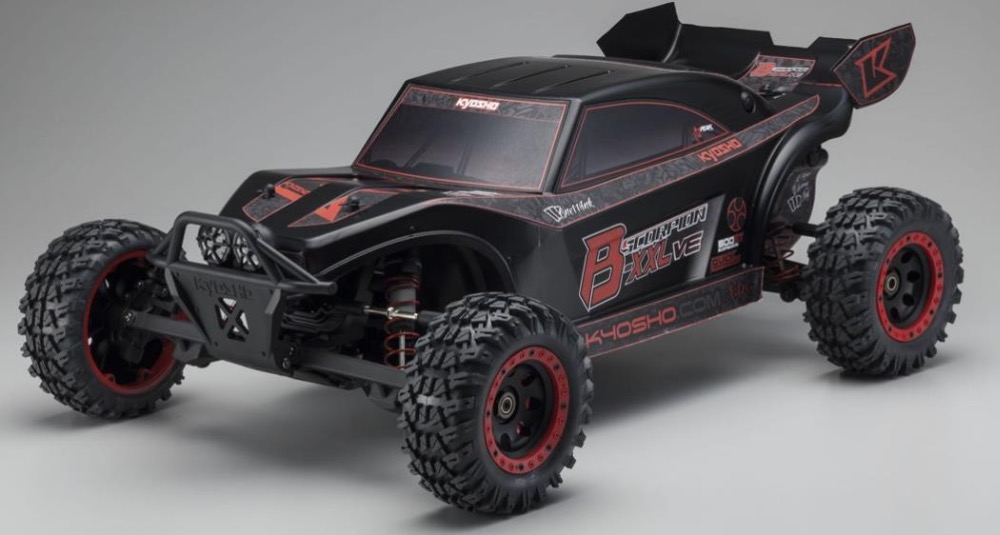

Le XMAXX est le 4x4 le plus puissant et solide qui existe, sa taille gigantesque et son innovation technique font de cette voiture le Monster Truck par excellence.
Moteur : Hobbywing 5687 1100kv
Variateur : Hobbywing MAX5 200A
Pneus : Louise MT Pioneer
Servo : Origine avec pignons métal
Options diverses :
Carroserie incassable TMT bodies
Transmission par courroie
Triangles renforcés
Echelle 1/6
Losi Super Rock Rey
Les performances réalistes d'un essieu solide sont associées à une puissance brushless 8S qui pousse la vitesse à plus de 80 km/h, tandis que la stabilité vous permet de tout donner dans les virages et les sauts.
Moteur : Dynamite 750kv
Variateur : Dynamite Fuze 160A 8S
Servo : Origine
Echelle 1/7
Arrma Mojave EXB
Conçu pour être à la fois rapide et robuste, il est capable de performances extrêmes dès réception, qu'il s'agisse de bondir sur des dunes de sable ou de rouler sur des trottoirs en béton.
Moteur : Origine du CEN Reeper 1450kv
Variateur : Hobbywing Max 6 160A
Servo : JX 46kg
Kyosho Scorpion

Le Scorpion XXL VE est particulièrement robuste et offre des conditions préalables idéales pour des sessions de bash délirantes ou pour des courses effrénées sur piste.
Moteur : SSS 4082 1650kv
Variateur : Traxxas VXL-8S
Pneus : Roapex MT Renegade
Servo : Power HD 21 kg
Options diverses :
Couronne transmission en acier
Cardans homocinétiques
Amortisseurs de Arrma Kraton EXB
Pare-choc avant RPM
Pare-choc arrière T-Bone-Racing
Plaque support variateur en carbone
Différentiel de Cen Reeper
Aileron arrière FG Marder
Echelle 1/8
Arrma Kraton EXB
Ce monster truck ajoute une résistance supplémentaire partout où cela est important, faisant de ce châssis à l'échelle 1/8 la plateforme parfaite pour du bashing à grande vitesse sur des terrains exigeants
Moteur : Konect 1900kv
Variateur : Konect 150A 6S
Servo : JX 46kg
Echelle 1/10
Traxxas MAXX V2
Le MAXX V2 est conçu pour résister aux punitions extrêmes et à la conduite intense.
Moteur : SSS 4082 1650kv
Variateur : Hobbywing MAX 8 150A
Pneus : Proline Badlands
Options diverses :
Triangles renforcés bleus
Traxxas MAXX V1
Le Traxxas Maxx bénéficie de toutes les qualités qui ont rendu le XMAXX célèbre. Bref, un véhicule tout-terrain puissant, brutal et vraiment fun à piloter !
Moteur : Robitronic 2000kv
Variateur : Hobbywing Xerun 150A
Options diverses :
Triangles renforcés verts
Traxxas Stampede 4x2
Penser pour délivrer le meilleur compromis entre faire chauffer les pneus, obtenir une vitesse de pointe très élevée et un temps de réponse des gaz qui soit précis.
Moteur : Castle 3800kv
Variateur : Hobbywing WP-SC8 120A
Carroserie : Proline Ford F-150 Raptor 2017
Pneus : Louise RC Mt-Rocket
Options diverses :
Triangles renforcés bleus, Pare-choc avant bleu, Ressort amortisseurs bleus, Support moteur bleu, Cache couronne pignon bleu